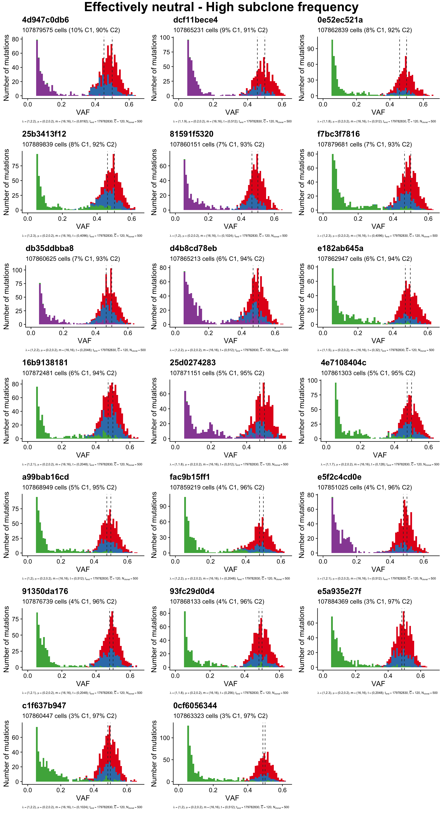

Non spatial MOBSTER simulations
MOBSTER_simulations.Rmdlibrary(TEMULATOR) # package containing the simulator and datasets
library(ggplot2)
library(cowplot)
theme_set(theme_cowplot())
library(gridExtra)
library(grid)
library(dplyr)Generation of the simulations
Below we define all the constant parameters. These are - unlike the seed, subclone birth rate (λ_sc) and time point of mutation (t_sc) - not varied. The birth rate of the ancestral clone is λ_a = 1.
# Simulation parameters:
mutation_rate = 16 # mutation rate per cell doubling (m)
death_rate = 0.2 # death rate (μ)
end_time = 179782830 # number of reactions until the simulation in finished
# Sequencing parameters:
depth_model = 2 # over-dispersed beta-binomial distribution, dispersion parameter ρ=0.0
n_clonal = 500 # number of clonal mutations (N_clonal)
depth = 120 # 120x simulated coverage (C̅)
min_vaf = 0.05 # minimum VAF to accept a variantFor each combination of λ_sc and t_sc a total of 9 simulations were generated. Since calculating these data takes significant time a dataset containing a summary of all simulation (‘mobster_summary_of_simulations’) and a list of S3 objects containing the datasets used in the paper (‘mobster_simulations’) are included in this package.
The first dataset summaries all 1755 simulations:
data("mobster_summary_of_simulations", package="TEMULATOR")
colnames(mobster_summary_of_simulations)
#> [1] "subclone_start" "subclone_birthrate"
#> [3] "n" "seed"
#> [5] "n_mutations_before_insertions" "subclone_fraction"
#> [7] "assigned_id"
t_sc = mobster_summary_of_simulations$subclone_start
b_sc = mobster_summary_of_simulations$subclone_birthrate
cat("t_sc: ", unique(t_sc), "\n")
#> t_sc: 4 8 16 32 64 128 256 512 1024 2048 4096 8192 16384
cat("lambda_sc: ", unique(b_sc), "\n")
#> lambda_sc: 1.1 1.2 1.3 1.4 1.5 1.6 1.7 1.8 1.9 2 2.1 2.2 2.3 2.4 2.5
cat("Number of rows:", NROW(mobster_summary_of_simulations), "\n")
#> Number of rows: 1755
stopifnot(all(table(t_sc, b_sc) == 9))The second dataset contains the simulations used in the paper:
data("mobster_simulations", package="TEMULATOR")
cat(length(mobster_simulations))
#> 150
print(mobster_simulations[[1]])
#> [ TEMULATOR result object ]
#>
#> > Clones:
#>
#> Clone #1:
#> - Birth rate: 1
#> - Death rate: 0.2
#> - Mutation rate: 16
#> => 63774069 cells (59%)
#>
#> Clone #2:
#> - Birth rate: 1.1
#> - Death rate: 0.2
#> - Mutation rate: 16
#> - Start time: 16
#> - Accestor: Clone #0
#> => 44089196 cells (41%)
#>
#>
#> > Other:
#>
#> - Seed: 1521811667
#> -> Gillespie time: NA
#> -> Total reactions: 1521811667
#>
#>
#> > Sequencing data:
#>
#> # Clonal mutations: 500
#> # Purity: NA
#> # Depth: 120
#> # Depth model: overdispersed beta binomial
#> # VAF cutoff: NA
#>
#> # A tibble: 961 x 4
#> clone alt depth id
#> <int> <int> <int> <chr>
#> 1 1 7 112 4bX0
#> 2 1 6 101 4cX0
#> 3 1 7 106 40X0
#> 4 1 7 133 40X1
#> 5 1 4 53 13X0
#> 6 1 11 161 13X1
#> 7 1 6 115 13X2
#> 8 1 6 119 13X3
#> 9 1 6 113 13X4
#> 10 1 4 74 97X0
#> # … with 951 more rows
#>
#> -> Call get_sequencing_data(x) to retrieve these.
plot(mobster_simulations[[1]])These pre-calculated data are used throughout this vignette, but they could be recreated using the following code:
for (i in seq_len(NROW(mobster_summary_of_simulations))) {
# the current variable parameters:
sc_st = mobster_summary_of_simulations$subclone_start[i]
sc_br = mobster_summary_of_simulations$subclone_birthrate[i]
seed = mobster_summary_of_simulations$seed[i]
simulation_result =
simulateTumour(
birthrates = c(1.0, sc_br),
deathrates = rep(death_rate, 2),
mutation_rates = rep(mutation_rate, 2),
clone_start_times = c(0, sc_st),
fathers = c(0, 0), # CLONAL -> SC1 -> SC2, linear evolution
simulation_end_time = end_time,
seed = seed,
depth_model = depth_model,
min_vaf = min_vaf,
number_clonal_mutations = n_clonal,
verbose=TRUE
)
# Check that the fraction of subclone cells are equal:
x_sc = as.numeric(get_clone_frequency(simulation_result)["clone_2"])
stopifnot(all.equal(mobster_summary_of_simulations$subclone_fraction[i], x_sc))
# Check that the included dataset is identical:
id = mobster_summary_of_simulations$assigned_id[i]
if (!is.na(id)) { # one of the 150 selected simulations
make_comparable = function(d) {
# drops two ids that can differ in the objects
validate_temulator_result_object(d)
d$mutation_data$id = NULL
d$mutation_data$clone = NULL
return(d)
}
included_data = make_comparable(mobster_simulations[[id]])
calculated_data = make_comparable(simulation_result)
stopifnot(all.equal(included_data, calculated_data))
}
}Selection of suitable simulations
The plot below shows the fraction of all cells that subclone made up. For a given insertion time the subclone can either not grow to a significant size (e.g. λ_sc < 1.5 and t_sc = 2048) or grow so fast that it dominates the whole population (e.g. λ_sc > 2 and t_sc = 2048). In neither of these two cases a subclonal cluster would be detectable in the site frequency spectrum at a medium sequencing depth of C ≈ 120 (see figures below). Simulations where the subclone is at a very high or low frequency (red areas) are effectively neutral and from each 20 simulations were choosen at random
In order to create a reasonable tests with a detactable cluster in the site frequency spectrum 110 simulations where drawn from those where the subclone made up a fraction of 0.2-0.8 of all cells (green area in the plot blow).
poly_a = data.frame(x=c(-Inf,-Inf,Inf,Inf,-Inf), y=c(1.02,0.9,0.9,1.02,1.02))
poly_b = data.frame(x=c(-Inf,-Inf,Inf,Inf,-Inf), y=c(0.8,0.2,0.2,0.8,0.8))
poly_c = data.frame(x=c(-Inf,-Inf,Inf,Inf,-Inf), y=c(0.05,0,0,0.05,0.05))
mobster_summary_of_simulations %>%
filter(subclone_start>4) %>%
mutate(subclone_start=factor(subclone_start, sort(unique(subclone_start)), ordered=1)) %>%
mutate(subclone_birthrate_f=factor(subclone_birthrate, ordered=1)) %>%
ggplot(aes(x=subclone_birthrate, y=subclone_fraction, group=subclone_birthrate_f)) +
geom_polygon(data=poly_a, aes(x=x, y=y), inherit.aes = FALSE, fill="red", alpha=0.5) +
geom_polygon(data=poly_b, aes(x=x, y=y), inherit.aes = FALSE, fill="green", alpha=0.2) +
geom_polygon(data=poly_c, aes(x=x, y=y), inherit.aes = FALSE, fill="red", alpha=0.5) +
geom_hline(yintercept = c(0.05, 0.2, 0.8, 0.9), linetype=3, color="gray10") +
geom_boxplot() +
scale_x_continuous(breaks=c(1,1.5,2,2.5), labels=c("1",1.5,2, 2.5)) +
facet_wrap(~subclone_start, labeller = as_labeller(function(x) paste0("t_sc = ", x)), ncol=3) +
xlab("Birthrate") +
ylab("Fraction of cells subclone")mobster_summary_of_simulations$group =
case_when(mobster_summary_of_simulations$subclone_fraction < 0.05 ~ "neutral_low_frac",
mobster_summary_of_simulations$subclone_fraction > 0.9 ~ "neutral_high_frac",
between(mobster_summary_of_simulations$subclone_fraction, 0.2, 0.8) ~ "detectable")
mobster_summary_of_simulations_subset =
mobster_summary_of_simulations %>%
filter(n_mutations_before_insertions >= 50) %>%
filter(!is.na(group)) %>%
filter(!is.na(assigned_id)) %>%
arrange(subclone_fraction)
ids_per_group =
split(mobster_summary_of_simulations_subset$assigned_id,
mobster_summary_of_simulations_subset$group)
sapply(ids_per_group, length)
#> detectable neutral_high_frac neutral_low_frac
#> 110 20 20Plots group 1: Neutral with low subclone fraction
plot_grid = function(object_list, title) {
plots =
mobster_simulations[ids_per_group[[set]]] %>%
lapply(plot, quite=TRUE)
for (i in seq_along(plots)) {
plots[[i]] =
plots[[i]] +
labs(title=substr(ids_per_group[[set]][i], 1, 10)) +
theme(plot.caption=element_text(hjust=0, size=6)) +
guides(fill=FALSE)
}
top = textGrob(title, gp=gpar(fontsize=25, fontface="bold"))
grid.arrange(grobs=plots, top=top, ncol=3)
}Plots group 2: Neutral with high subclone fraction
set = "neutral_high_frac"
title = "Effectively neutral - High subclone frequency"
plot_grid(mobster_simulations[ids_per_group[[set]]], title)
Plots group 3: Non-neutral with potentially detectable subclone
set = "detectable"
title = "Potentially detectable subclone"
plot_grid(mobster_simulations[ids_per_group[[set]]], title)